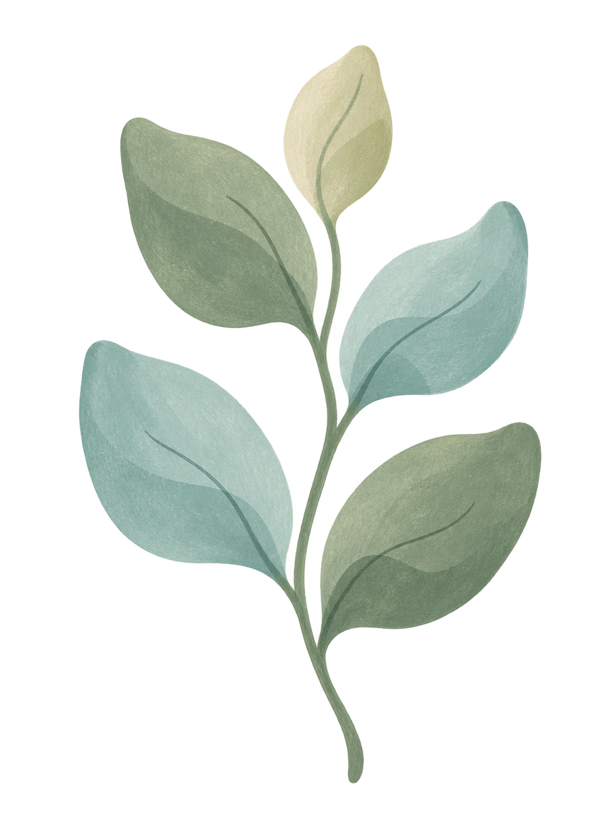
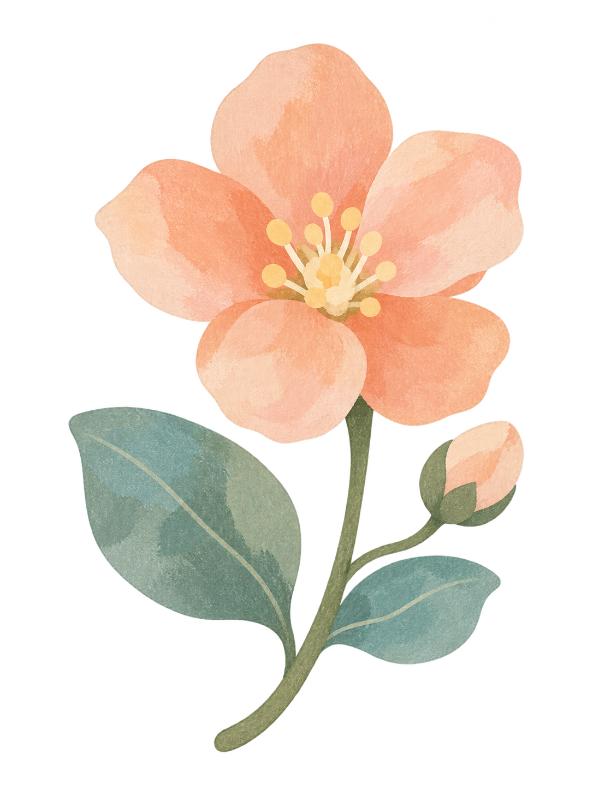
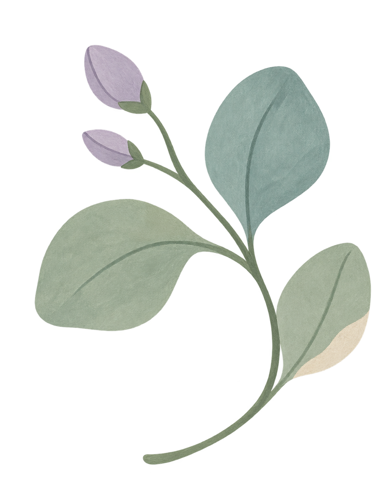

让生活，一格一格被看见。
建议按 01 → 06 顺序上传 · 点击放大
画面中的界面来自当前版本原生 App，记录内容为独立演示数据。每张 PNG 均为完整尺寸、无透明通道；总览图仅供审阅。图像、文案与审核说明均可单独下载。
支持页面、隐私政策网址、版权主体与审核联系人尚未填写。价格和 App Store 上架信息由你在 App Store Connect 中设置。英文截图主流程已本地化；新版引导与设置等仍需完成英文发布验收。此素材包没有借用其他 App 的身份信息。
一套关于记录、回顾与理解自己的商店素材。
真实的 App 界面，配上属于时格的颜色和温度。



建议按 01 → 06 顺序上传 · 点击放大
画面中的界面来自当前版本原生 App，记录内容为独立演示数据。每张 PNG 均为完整尺寸、无透明通道；总览图仅供审阅。图像、文案与审核说明均可单独下载。
支持页面、隐私政策网址、版权主体与审核联系人尚未填写。价格和 App Store 上架信息由你在 App Store Connect 中设置。英文截图主流程已本地化；新版引导与设置等仍需完成英文发布验收。此素材包没有借用其他 App 的身份信息。